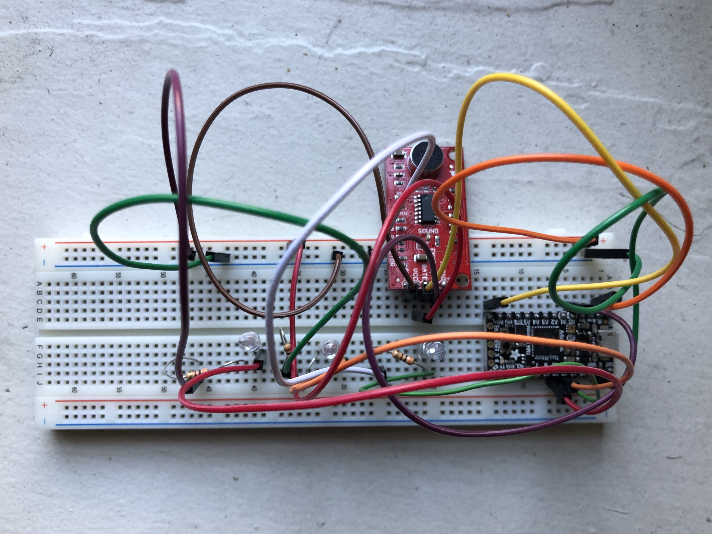
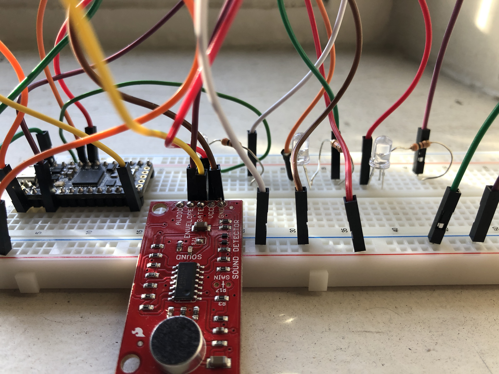
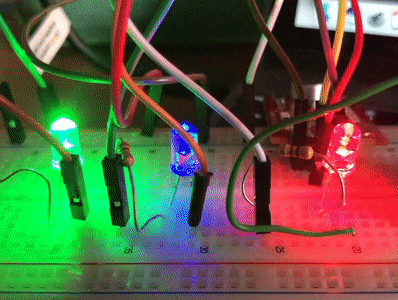

This week, we instructed to make program an Arduino microcontroller in any manner we wanted. I was inspired both by Victoria's stylin' rave choker and a bluetooth speaker my roommate and I share -- it's shaped like a jukebox (which is awesome) and has lights that flash when a song is playing. We always thought it was flashing to the beat but are now almost 100% convinced that it's actually just a preset pattern that plays on a loop. So, I thought it would be fun to make something that actually does respond to beats/volumes with this week's project!
I used a SparkFun Sound Detector, a small board that combines a microphone and circuitry, into which I soldered a set of pins so I could insert it into my breadboard. This model worked quite well, as it reports three important outputs:
In my project, I especially wanted to leverage the envelop output (analog voltage measurements) and assign different LED bulbs to different decibel levels' corresponding voltages. With the kindly assistance of the folks at the SparkFun online community, I found template code that was set up to spit out voltage counts in the Serial Monitor in the Arduino IDE. I adapted this to make a selection of conditional if/else statements that would sequentially illuminate three LED bulbs in the presence of differing voltages. See my example below -- this is only a small portion of the loop just to give a sense of how I structured the statements. The full code is available for download here!
else if( (value > 32) && ( value <= 70) )
{
Serial.println("Moderate.");
digitalWrite(ledPin1, HIGH);
digitalWrite(ledPin2, HIGH);
digitalWrite(ledPin3, LOW);
}
else if(value > 70)
{
Serial.println("Loud.");
digitalWrite(ledPin3, HIGH);
digitalWrite(ledPin2, HIGH);
digitalWrite(ledPin3, HIGH);
}
Initially, I had quite a few difficulties! My port wasn't being recognized (nothing that a good ole refresh couldn't handle) and the code, while compiling, wasn't running as planned (as it turns out, the difference between "=" and "==" is critically important when starting a loop!). After some requiste web-searching and breadboard tinkering, the vision at last came to fruition -- the bulbs turned on with aural stimuli of different volumes! Enjoy the video below.
Once the code was compiled and did what I wanted it to do, I did some fine-tuning to make proper adjustments to the bulbs' sensitivity to voltage. Initially, the red LED would fire at a very low threshold, consigning it to always being on in the bustling environment of the Fab Lab. So, I changed its voltage range and those of the other LEDs accordingly until they were at appropriate levels.
Finally, as much fun as I had simply snapping or clapping into the microphone, I thought a very fun presentation mechanism that paid homage to my lovely Bluetooth Jukebox was by allowing the bulbs to respond to music. So, I picked a brief song from my favorite band Vulfpeck and set my circuit off to do its thing. Fortunately, the punchiness of Vulfpeck's funky baselines made for exciting rhythmic pulsations by the LEDs, lighting up and turning off in concert.
